Introduction Excel is a spreadsheet application that is part of the Microsoft Office suite. 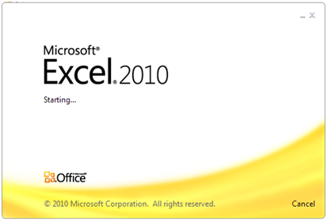 What is a spreadsheet? A spreadsheet is a program that allows the user to enter data and make calculations with them in a grid layout. There are a lot of programs for managing spreadsheets but the best-known are Excel, in the Microsoft Office suite, and Calc, in the LibreOffice suite. Although Calc is opensource, with all the advantages associated therewith, Excel is by far the most widespread and mature spreadsheet, thus this manual covers Excel 2010. However, some of the procedures and methods explained in this manual are also valid for Calc. Excel 2010 main window The figure below shows a screenshot of the Excel 2010 main window where the different parts of the window have been highlighted. 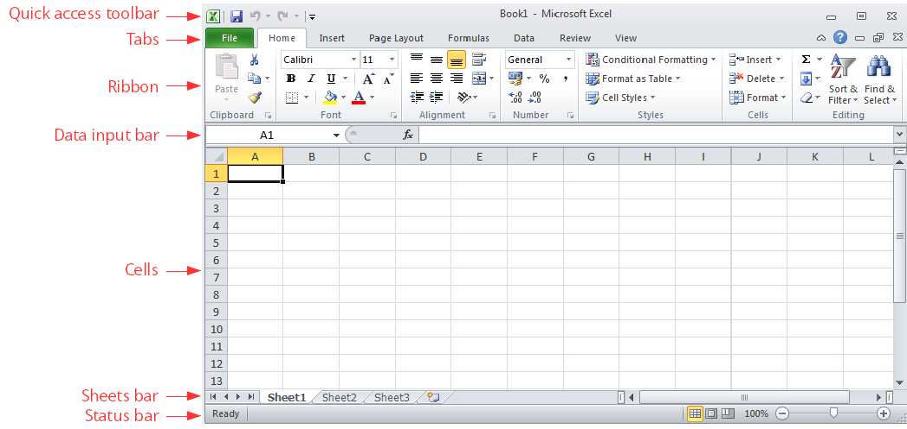 Excel 2010 ribbon The top ribbon of Excel 2010 contains a lot of buttons that perform different actions. These buttons are arranged in panels, and the panels are arranged in tabs. The main ribbon tabs are: File – Performs file management tasks (new file, open file, save file, print file, etc.). It also contains general configuration options and help. 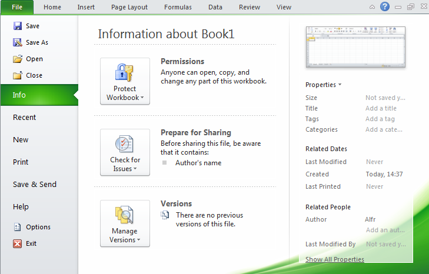 Home – Common tools (clipboard, fonts, alignment, numbers format, insert rows and columns, etc.) 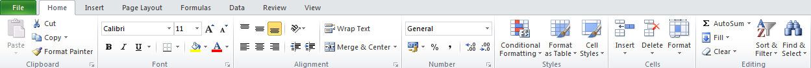 Insert – Insert objects in the sheet (tables, illustrations, charts, hyperlinks, text, equations, etc.) Page Layout – Configure the printing (page setup, scale, themes, etc. ) 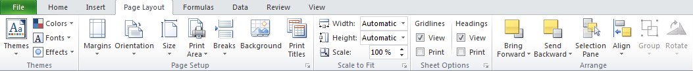 Formulas – Functions arranged in categories and formula auditing. 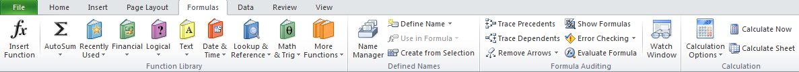 Data – Working with databases (import data, connection with databases, sort and filter data, data validation, etc.) 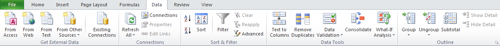 Review – Spelling, commenting, protecting and sharing sheets. 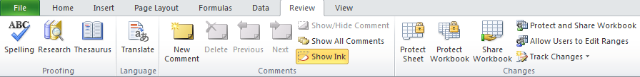 View – How Excel appears on screen (custom windows, grids lines, zoom, windows, etc. Does not affect printing). Contextual tabs These tabs only appear in some contexts, as for example, when creating a chart or a picture. Chart design Allows to select the type of chart. Chart layout Allows the user to insert and configure some parts of charts (title, axis, leyend, gridlines, etc.) Chart format Allows the user to change the aspect of charts (height, width, font, colors, background, etc.) Picture Allows to modify images (borders, rotation, crop, color, filters, special effects, etc.) 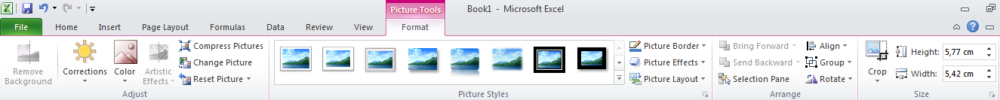 In addition to these tabs, users can create their own tabs and customise them with buttons at their convenience. There is also a quick access toolbar just above the ribbon that can be customised with the most common buttons. 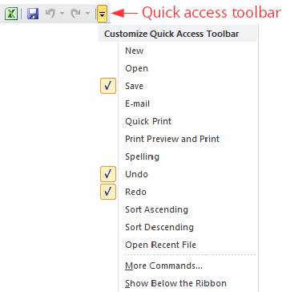 Access dialogs When you click the right bottom corner of any panel, the corresponding dialog is shown where all the related options are available. Example. Figure below shows the font dialog with all the options related to fonts (font family, font style, font size, etc.) 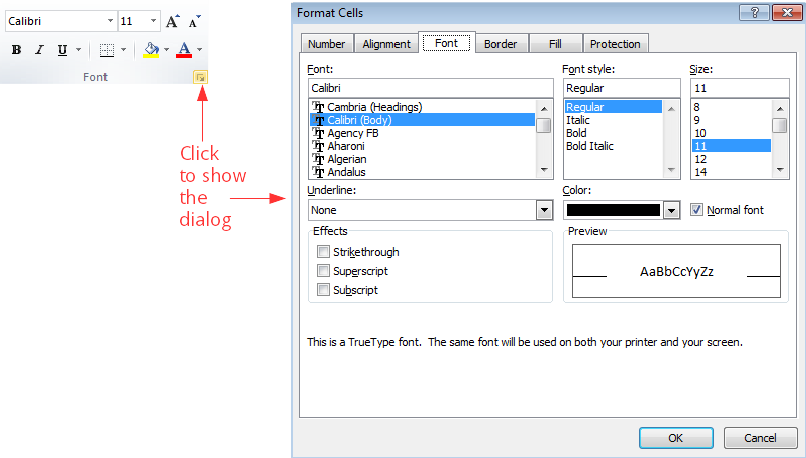 Contextual menu Clicking the right button of the mouse (right-clicking) a contextual menu is shown with some buttons or options to perform actions in that context. This menu has different options depending on the part of the windows that is clicked. Example. Figure below shows the contextual menu showed right-clicking any cell. Workbooks, worksheets, rows, columns and cells An Excel file is a workbook with several worksheets that are two dimensional tables divided in columns and rows. The intersection of a column with a row is a cell that is where data are entered. Sheets have a maximum of 16,384 columns and 1,048,576 rows. Each worksheet has a name and they are arranged in tabs at the bottom. Columns and rows also have names; columns are named with letters at the top of the column and rows with numbers to the left of the row. This way each cell is identified by the name of the worksheet, the name of the column and the name of the row where it is located, and cell names follow the pattern: name-of-worksheet ! column-name row-name. However, to refer to any cell in the active worksheet, the worksheet name may be omitted. Example. The name of the selected cell in the figure below is Sheet1!C4. 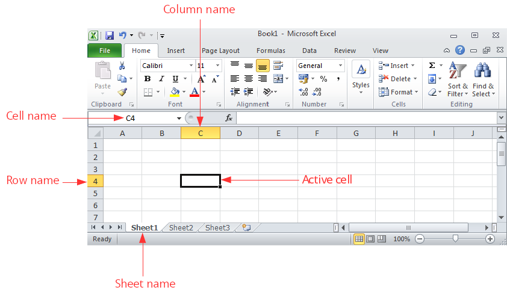 The names of rows and columns can not be changed, but worksheet names can be changed by double-clicking on the name and typing the new name. Ranges of cells A range of cells is a rectangular block of adjacent cells that is identified by top-left cell and the bottom-right cell separated by a colon, following the pattern top-left-cell-name:bottom-right-cell-name. Example. In the figure below the range B3:E5 is selected. Selecting cells, rows, columns, ranges and worksheets To select a cell just click it. To select a row click the header of the row or press the keys Shift+Spacebar. To select a column click the header of the column or press the keys Ctrl+Spacebar. To select a range click one corner cell and drag the cursor over the desired cells. To select the whole worksheet click the top-left corner of the worksheet or press the keys Ctrl+A. Example. The animation below shows how to select cell C3, then row 3, then column C, then range B3:D7 and finally the whole worksheet. 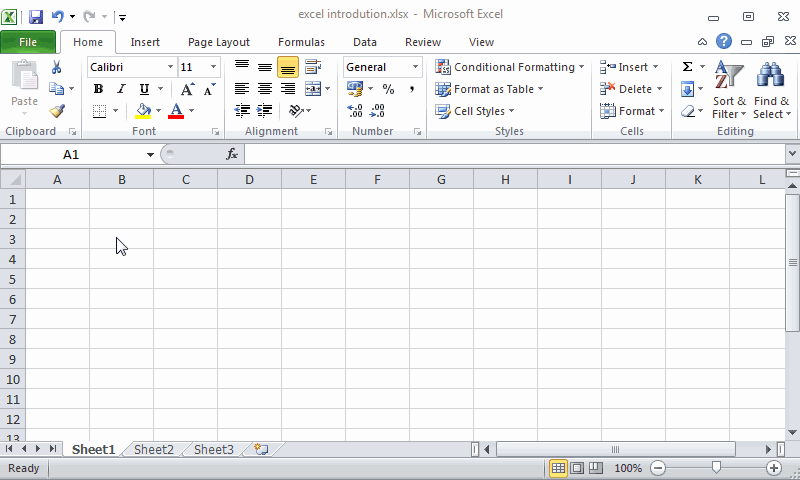 Data edition Insert data Data are entered into the cells by activating the cell (clicking it) and typing directly in the cell or in the input bar. Example. The animation below shows how to enter the text ‘Excel’ in cell B2 and the number 2010 in cell C2, and then how to change the number of cell C2 to 2013. 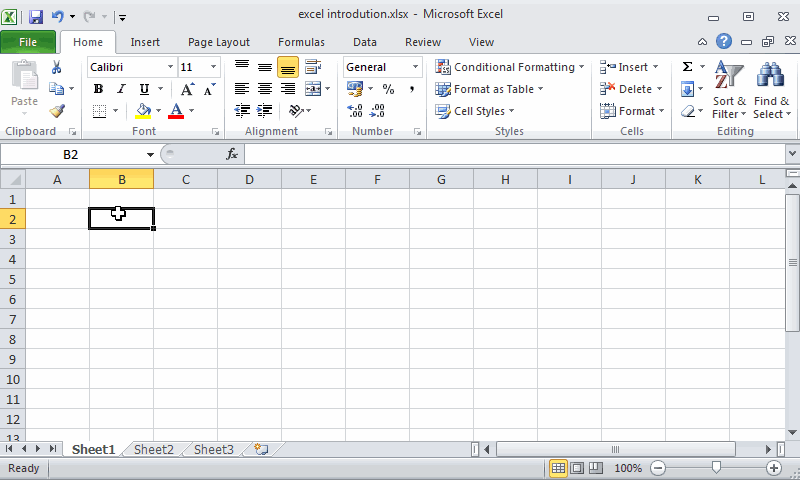 Excel has a smart autocomplete feature that proposes some options for completing the typed data. Delete data To delete the content of a cell or a range of cells simply select the it and press Supr key. It is also possible to delete the cell contents with the button Clear All. Remove cells, rows, columns and worksheets To remove a whole cell (not only the content), right-click the cell and select the option Delete.... In the dialog that appears select Shift cells left if you want the cells to the left of the removed cell to move to the left to fill the gap, or Shift cells up if you want the cells below the removed cell to move up to fill the gap. To remove a whole row, right-click the header of the row and select the option Delete.... To remove a whole column, right-click the header of the column and select the option Delete.... To remove a worksheet, right-click the tab with the name of the worksheet and select the option Delete.... Warning: Removing worksheets cannot be undone! Example. This shows how to remove a cell, a row, a column and a worksheet. Insert cells, rows, columns and worksheets To insert a new cell in a position, right-click the current cell in that position and select the option Insert.... In the dialog that appears select Shift cells right if you want to move the cells to the right to make a gap for the new cell, or Shift cells down if you want to move the cells down to make a gap for the new cell. To insert a new row, right-click the header of the row above which you want to insert the new row and select Insert. To insert a new column, right-click the header of the column to the left of which you want to insert the new column and select Insert. To insert a new worksheet, right-click the tab with the name of the worksheet to the left of which you want to insert the new worksheet and select Insert. In the dialog that appears select `Worksheet’. Example. The animation below shows how to insert a cell, a row, a column and a worksheet. Cut, copy and paste Like in many other Windows applications, you can use the clipboard to cut, copy and paste cells, rows, columns and ranges contents. To cut or copy a cell, row, column or range, right-click it and select the option Cut or Copy respectively, or press the keys Ctrl+x or Ctrl+c respectively. Both options copy the content of the cell, row, column or range to the clipboard, but the difference between cut and copy is that cut deletes the content from the current cell, row, column or range, while copy does not. To paste the content of the clipboard in a new cell, row, column or range, select the cell or the first cell of the row, column or range and click the button Paste or press the keys Ctrl+v. Example. The animation below shows how to copy and paste the content of a cell, a row, a column and a range and a worksheet. 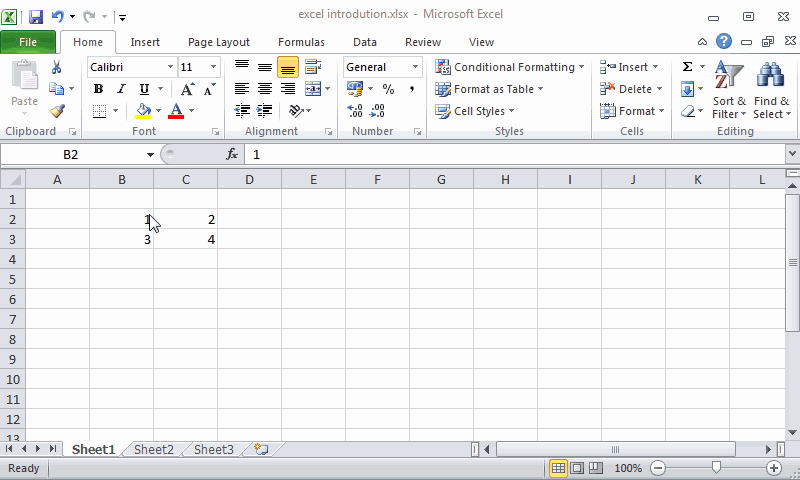 Autofill A useful feature of Excel is the autofill of cells following a serie or pattern. In some cases, like for example dates, it is enough to write the content of the first cell and then click the bottom-right corner of the cell and drag the cursor over the column or row to fill the cells with the subsequent dates. For numbers or text, this action replicates the content of the first cell in the others. To autofill with a series of numbers it is necessary to enter the first two numbers of the series in two consecutive cells, then select both cells, click the bottom-left corner and drag the cursor over the column or row to fill the cells with the numbers following in the series. Example. The animation below shows how to replicate the content of cell A1 to range A2:A10, then how to auto fill the range B1:B10 with the dates following date in cell B1, and finally how to auto fill the range C1:C10 with the series of even numbers. 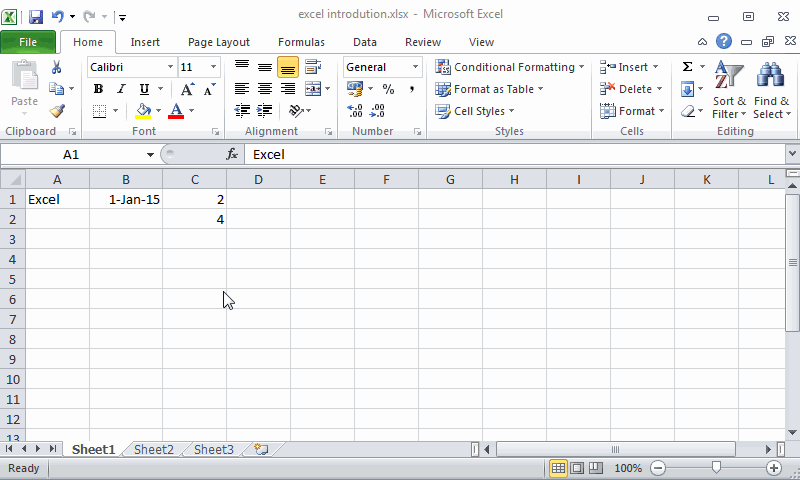 Undo and redo In the quick access toolbar there are buttons Undo and Redo . The Undo button undoes the last data edition action performed and the Redo button reverses the last undone action. If you press the undo button several $n$ times, it undoes the last $n$ actions, and the same happens with the redo button. Example. The animation below shows how to remove the content of cell B2, then change the content of cell C2 two times, then undo that action and finally redo the same actions. Column and row sizing Column width and row height can be easily changed. To change the width of a column click the line between the column you want to resize and the next column in the column header, and then drag the pointer mouse to increase or reduce the column width. If you double-click this line the column width will auto resize to the width of the widest cell content in the column. In a similar way, to change the height of a row click the line between the row you want to resize and the next row in the row header, and then drag the pointer mouse to increase or reduce the row height. If you double-click this line the row height will auto resize to the height of the highest cell content in the row. Example. The animation below shows how to resize the width of column C and the height of row 3 to fit the content of cell C3. 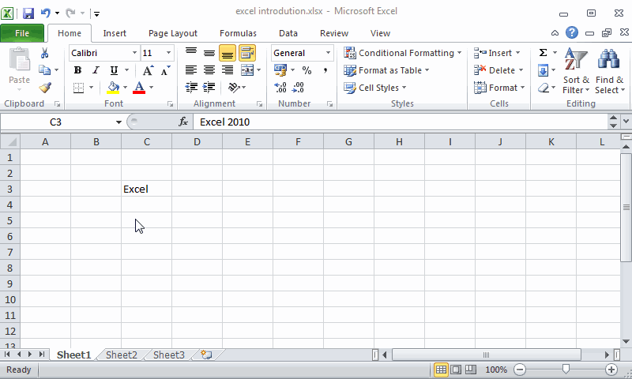 File management Data of workbooks are stored in files. Although Excel makes backups copies of your work regularly, it is good practice to save your work in files regularly. Save a file To save the content of a workbook in a file press the tab File and select the option Save. In the dialog that appears type the file name and select the storage unit and folder where you want to save the file. The default extension for Excel 2010 file names is xlsx. Open a file To open an Excel file press the tab File and select the option Open. In the dialog that appears select the storage unit and folder where the file is saved and the file to open, and press the button Open. Create a new workbook To create a new workbook press the tab File and select the option New. In the dialog that appears select Blank workbook. It is possible to create new workbooks from predefined templates. Close a workbook To close an open workbook press the tab File and select the option Close. If the last changes in the workbook haven’t been saved, a warning will appear allowing you to save the file before to close it. Exporting and importing data Excel can export and import data in many formats. One of the most common formats is csv (comma separated values). In this format data is saved in a plain text file one row per line and separating columns with commas or semicolons. Export to csv format To export a worksheet to csv format file, click the option Save as of the ribbon’s File tab. In the dialog that appears select the option CSV (Comma delimited) (*.csv) from the drop-down list Save as type, give a name to the file, select the folder where to save it and click OK. Example. The animation below shows how to export a worksheet with a students database to a csv format file. 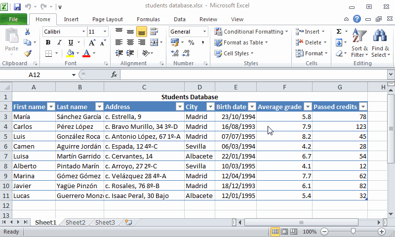 Import from csv format To import csv format file click the option Open of the ribbon’s File tab. In the dialog that appears click the button to the right of the File name box and select the option Text Files (*.prn;*.txt;*.csv), select the csv format file and click OK. If you want more control in the importation process, click the From Tex button of the Get External Data in the ribbon’s Data tab. In the dialog that appears select the csv format file and click the Import button. This brings another dialog where you can select if fields are delimited by a special character or are a fixed number of characters, the delimiter character (Tab, Semicolon, Comma, Space or other), the data format or every column (General, Text or Date). After that click the Finish button and in the dialog that appears select the cell where to put the imported data and click OK. Example. The animation below shows how to import the csv format file with the students database of the previous example. Getting help One of the most useful features of Microsoft Office programs is the system of help that they have. To get help about any issue in Excel click the option Help in the Help tab of the ribbon, and then click Microsoft Office Help. This shows a browser where you can enter some key words and Excel will search topics related to these words and present the search results in a list. Clicking the desired topic will show you help info about that topic. Example. The figure below shows the help search results for the word “cell”. 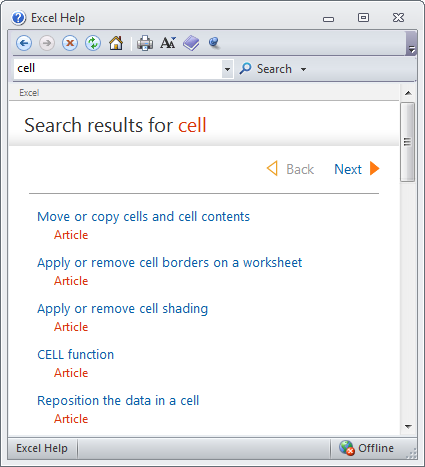 Excel Next Formatting and Data Printing